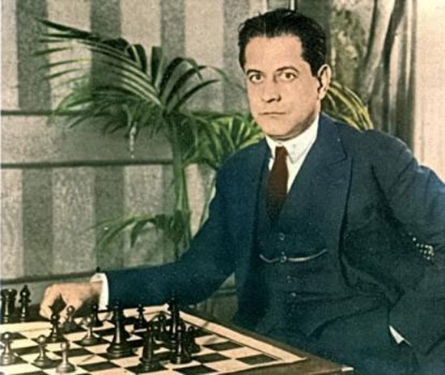

¿Cuál es tu nombre?
Me llamo: Ricardo Diego Penagos Arenas

Uno de mis más grandes hobbies es el ajedrez, y como máximo exponente tengo a José Raúl Capablanca
José Raúl Capablanca y Graupera (La Habana, 19 de noviembre de 1888 - Nueva York, 8 de marzo de 1942) fue un ajedrecista
cubano, tercer campeón mundial de ajedrez de 1921 a 1927. Por su genio precoz, fue apodado "el Mozart del ajedrez"; por
el aura de invencibilidad, en su época dorada se le llamó "la máquina del ajedrez".
Capablanca, Ramón Fonst y Alfredo de Oro constituyen las tres figuras más importantes del mundo deportivo cubano de las
primeras décadas del siglo XX, cuando fueron llamados "la tríada de oro cubana", ya que cada uno era el máximo exponente
en su deporte
Fue un ajedrecista cubano, a sus 13 años consiguió el título de campeón nacional en cuba, fue el tercer campeón mundial de ajedrez de 1921 a 1927.